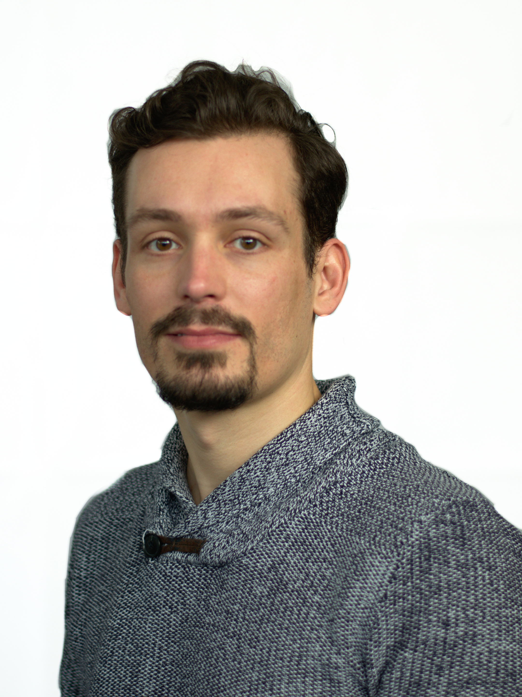

I am an interim professor of Computer Science at Universität zu Köln during the summer term 2020 and the winter term 2020/2021.
My research interests include approximation and online algorithms, energy-efficient algorithms and scheduling theory. I am also very interested in learning augmented online algorithms.
News
- I am a PC-member of WAOA 2020
Recent Positions
- April 2020 - current:
Interim professor of Computer Science, Universität zu Köln, Cologne, Germany - April 2017 – March 2020:
DFG-Project Principal Investigator, Saarland University and Max-Planck-Institut für Informatik, Saarbrücken, Germany - July 2016 – March 2017:
Postdoctoral Researcher, Bonn University, Bonn, Germany. Member in the group of Heiko Röglin. - January 2014 – June 2016:
Postdoctoral Researcher, Max-Planck-Institut für Informatik, Saarbruecken, Germany - January 2013 – December 2013:
Postdoctoral Researcher, University of Pittsburgh, USA, hosted by Prof. Dr. Kirk Pruhs and supported by a scholarship within the Postdoc Programme of the German Academic Exchange Service (DAAD). - August 2009 – September 2012:
Research Associate, Humboldt Universität zu Berlin, Germany.
Education
- August 2009 – August 2012:
Ph. D. in Computer Science at Humboldt Universität zu Berlin, Germany. - August 2007 – June 2009:
Master’s Degree in Computer Science (Efficient Computation line of study) at Lund University, Sweden. - September 2002 – November 2007:
Degree (Ptychio) in Applied Mathematics at University of Crete, Greece.
Program Committees/Service
- PC-member of Workshop on Approximation and Online Algorithms, WAOA 2020
- PC-member of 13th Workshop on Models and Algorithms for Planning and Scheduling, MAPSP 2017
-
PC-member of 46th International Conference on Parallel Processing (Algorithms area), ICPP 2017
-
PC-member of 5th International Workshop on Power-aware Algorithms, Systems, and Architectures ICPP PASA 2016
-
Co-organizer of ADFOCS 2015